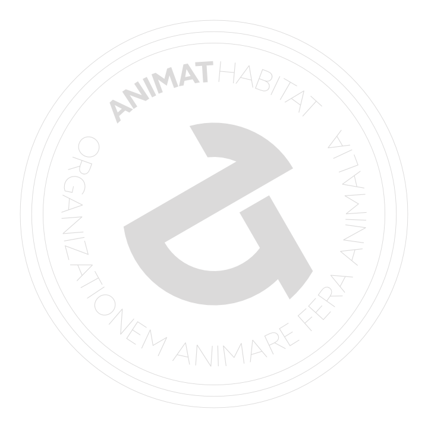

September, 2015
Incorporation
Halifax, NS Canada
EST. 2015, CANADA — Art studio in support of wildlife conservation is established in Canada as not-for-profit organization no. 942675-2.
The name of the studio — Animat Habitat™ is lettered in the corporate seal along with the motto: Organizationem Animare Fera Animalia (OAFA). “Animare” and “Animat” share the derivation from the Latin animõ “to animate”, “to give life to”. Altogether, the motto translates to: an organization to give life to the wild animals. The founder of the studio — Dane Aleksander, graphic artist in Halifax, has licensed computer art software and started an independent practice with a bias to projects that aim to protect the wild places and the animals that live in them. This creates an opportunity to explore the many meaningful stories and multifaceted challenges of wildlife conservation in the natural habitats in Canada, and in North America and so on, all over the world. At first, the artwork at the studio is focused on the story of elephants in Africa. The hope for wildlife in Africa is succinctly stated in the introduction of the talk radio show: Our Wild World with host Eli Weiss, “Africa is at a crossroads, on the brink of possibilities. [Therein, in particular in the national parks and in the corridors in-between, is hope for wildlife in Africa.] In Africa, it is still possible to make a difference.” Still more and more species are being driven to extinction in the wild and in response, Animat Habitat™ looks to the iconic animals: the keystone and umbrella species, and aims to create constructive art to help conserve their ecosystems and the biodiversity that cascades from their presence. Animat Habitat™ is here to give voice to the wild animals in art.
1 September 2015 — Animat Habitat™ is founded upon the idea, “that illustrating beauty in nature through the lens of interactive media can give rise to an unprecedented voice in support of wildlife conservation.” The date of release of the first publication at Animat Habitat™ is yet to be determined, however, a library of scenes in wildlife art is now officially in production. /scene/one/making-of-ella-2
Authorized use of the crest, or coporate seal, is limited to directors of Animat Habitat™ with the explicit purpose of certification of organizational documents, and with the excepted purpose of its designation in corporate graphical resources.
Copyright © 2015 Animat Habitat™. Terms of Access.